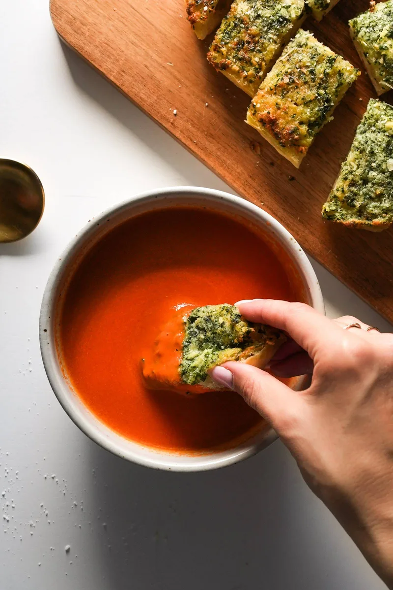

Tomato Soup

Description
This tomato soup is… honestly everything right now!
It’s made with 5 ingredients – modeled after the iconic Marcella Hazan tomato sauce recipe!
I’ll never say no to a bowl of tomato soup with a hot and crusty, buttery, salty piece of garlic bread,
or a grilled cheese, and this one is so simple that there is no good reason you shouldn’t make it for dinner immediately.
Ingredients
- Canned tomatoes
- 1 yellow onion, peel removed, cut into 4 chunks
- 1 stick of salted butter
- 3-4 cloves smashed garlic
- 1 1/2 teaspons salt
Directions
- Put the tomatoes, butter, and onion in a large saucepan or Dutch oven. Bring it up to a low bubble, then turn the heat to medium low. Cover partially with a lid; let it simmer for 45 minutes. Stir every 15 minutes or so to prevent scorching on the bottom.
- Remove the onion pieces using tongs. I leave the garlic in there, but that’s up to you!
- Using an immersion blender, blend up the soup until it’s a smooth as you want it. Taste and adjust; you can thin it out with milk, water, broth, cream, whatever you want; I just leave it as-is!
Home